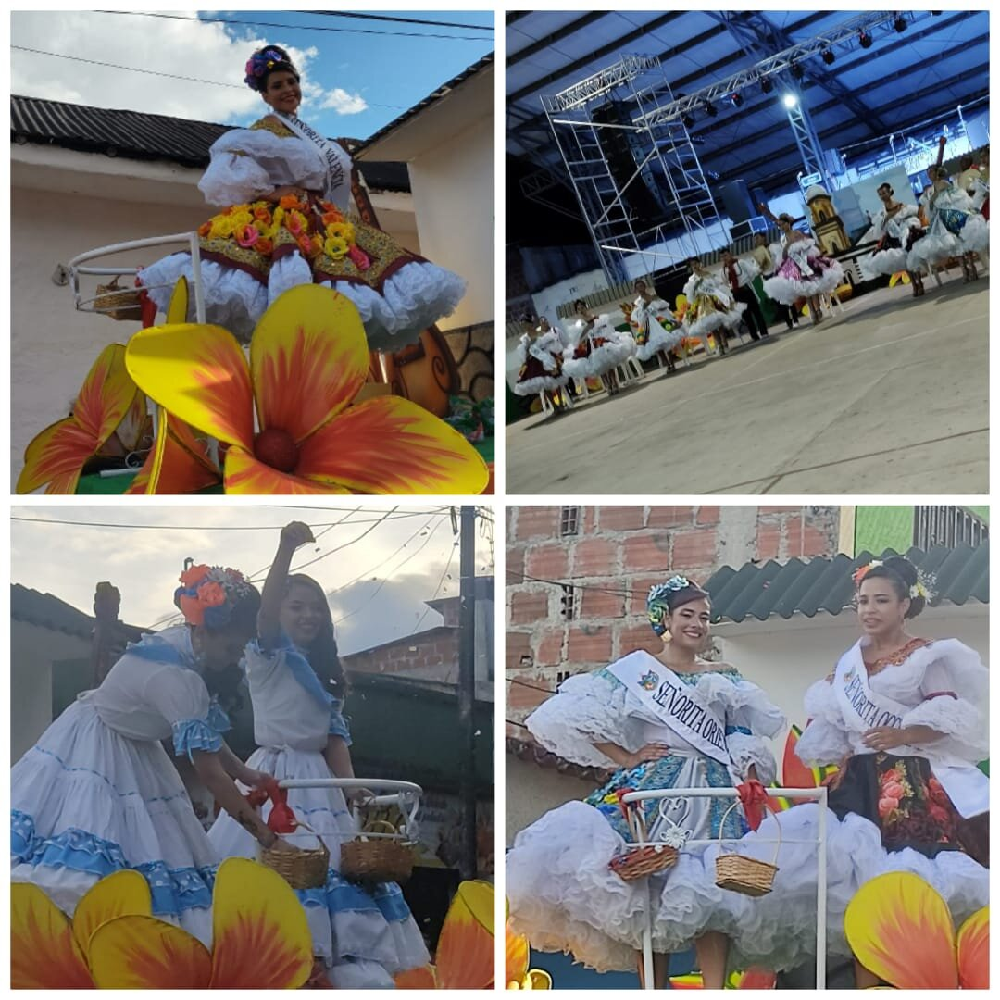
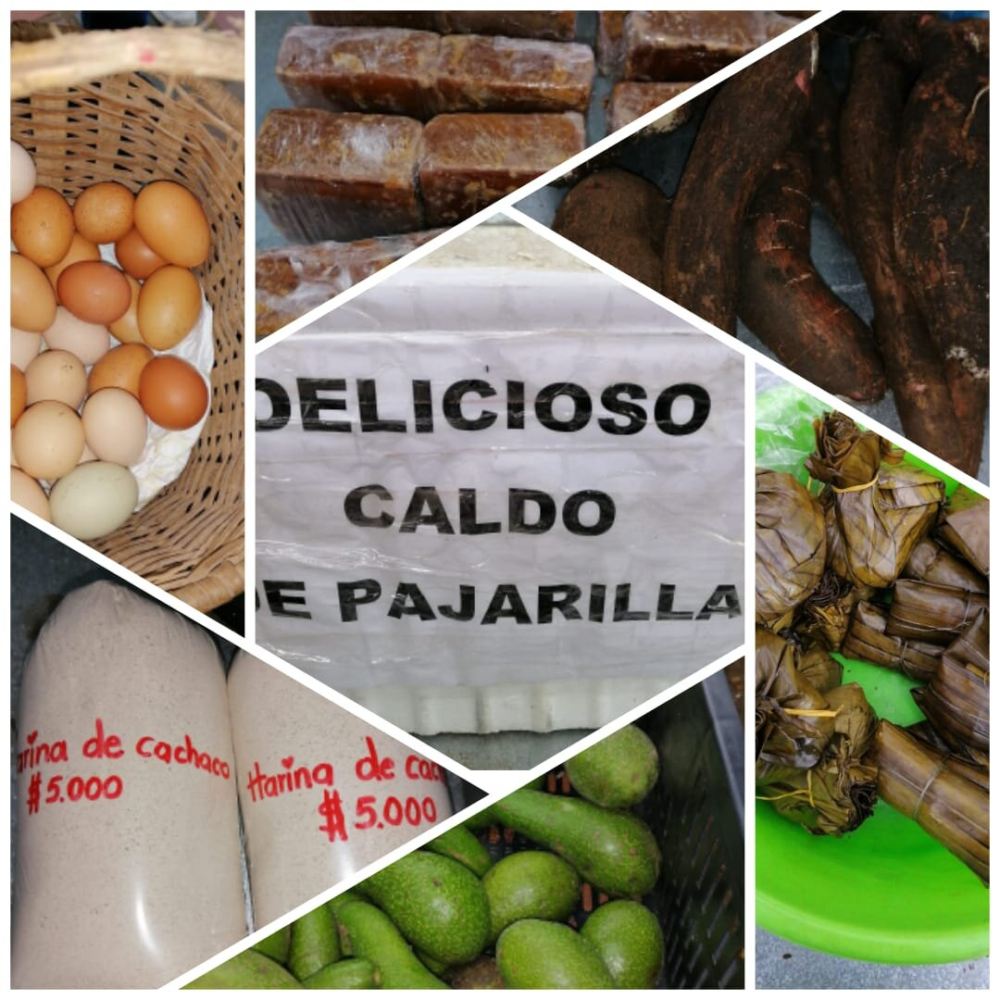
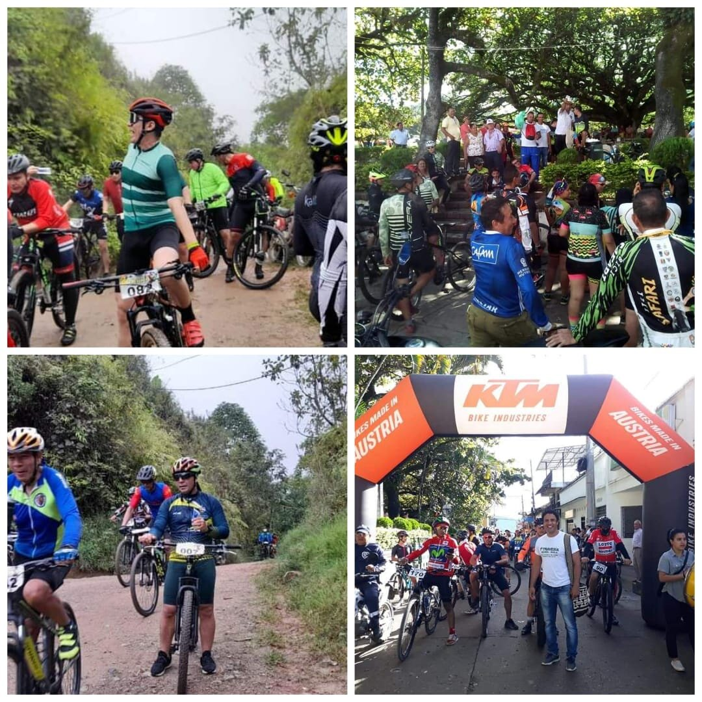
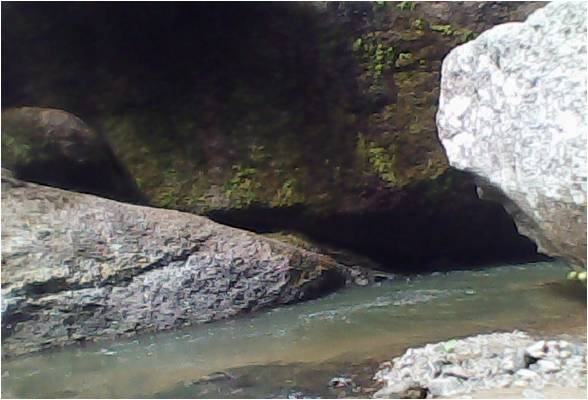
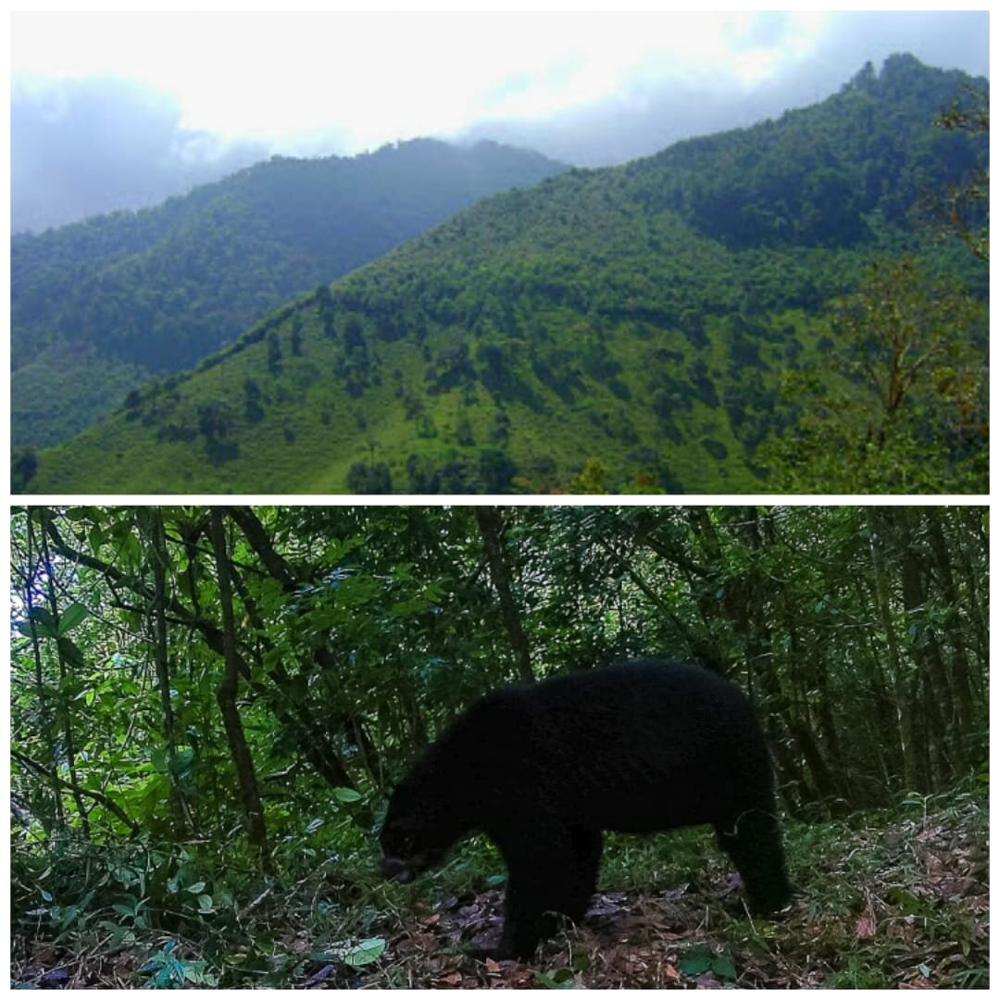
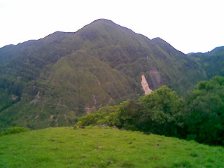

Actividades y Lugares Turísticos
Las actividades que tienen lugar en el municpio de Íquira son diversas y muy llamativas debido a las raíces culturales que representan y a la exaltación que realizan de las características y situaciones propias del municipio y del departamento del Huila. Asimismo, algunos de sus lugares turísticos son poco conocidos, sin embargo, cuentan con gran variedad de flora y fauna, de características "extremas" y que permiten tener una gran vista del pueblo y sus alrededores.
Actividades
Fiestas de San Pedro (Ver)
La principal fiesta cultural del municipio y del departamento del Huila son las fiestas de San Pedro, también conocidas como Festival Folclórico, Reinado Nacional del Bambuco y Muestra Internacional del Folclor, las cuales son reconocidas como patrimonio cultural de la nación. Todos los años, entre finales de junio y comienzos de julio, en Íquira se realizan varias actividades folclóricas como desfiles por las calles principales, en los que se presentan las reinas de diferentes barrios y centros poblados del municipio, también, se presentan comparsas y bailes realizados por grupos propios del pueblo o por las "colonias"; también es de importancia el típico asado huilense, los insulsos y las achiras para compartir en familia. Asimismo, se realiza el reinado municipal, en el que las reinas bailan el tradicional baile del San Juanero con el objetivo de coronar a la "Señorita Íquira" hasta el próximo año que se realizan estas festividades. Finalmente, cada cuatro años se realiza el llamado "Retorno", en el cual las "colonias" de iquiereños que viven en otras regiones del país, regresan al municipio para participar en esta celebración con grupos de comparsas y la reina que representa a la colonia en específico.
La costumbre de celebrar las fiestas de San Pedro viene de la tradición católica que por muchos años impartieron los españoles durante la época de la conquista de homenajear a San Juan Bautista. Más adelante, esta celebración se conoció también como las fiestas de San Pedro y San Juan. Desde 1970 se le llama Festival Folclórico, Reinado Nacional del Bambuco y Muestra Internacional del Folclor .

Mercado Campesino
En la actual administración municipal en cabeza del alcalde Yadnolver Correa Tamayo, se comenzó a realizar los días sábados en la mañana el mercado campesino, en el que algunos habitantes de la cabacera municipal hacen algunos productos y los sacan a la venta para la comunidad iquireña. Asimismo, de algunas veredas bajan campesinos con los productos que cultivan en sus fincas, los cuales son frescos y libres de contaminantes químicos. De esta forma, la alcaldía promueve en los iquireños a comprar lo producido en tierras del municipio y por los paisanos, difundiendo la frase "¡Compremos lo Nuestro!"

La Travesía del Café
Es una jornada deportiva que se lleva a cabo en Íquira, en el que ciclistas de diferentes municipios del Huila y de otros departamentos de Colombia como el Valle del Cauca, Tolima, Entre otros, recorren la zona cafetera del municipio. Se han realizado dos Travesías, la segunda se realizó el 14 de noviembre del 2021 y se hizo con el patrocinio de la Gobernación del Huila, Inderhuila y la Alcaldía de Íquira, en honor a la raza cafetera de nuestro departamento, como primer productor del grano en el país. La travesía constó de 34 km, en los que se recorrieron las zonas cafeteras como las veredas de Juancho, Villa María, San Luis y Pacarní, para finalmente llegar nuevamente a Íquira. Adicionalmente, se rifaron entre los participantes dos bicicletas de buena gama y $2.000.000 en efectivo, como un incentivo del turismo, la cultura y el deporte.

Lugares Turísticos
Cuevas del Chaparro
Las cuevas del chaparro se encuentran ubicadas en la vereda El Chaparro de Íquira, a una hora aproximadamente del casco urbano del municipio. Estas cuevas son cavidades naturales en el suelo resultado de la acción del agua a lo largo de los sigos, además son impresionantes sus notables laberintos. Es un lugar exótico que alberga mucha flora y fauna en sus cavidades, las cuales son húmedas y oscuras. Cuenta con un diámetro variable a lo largo del recorrido, ya que en algunas zonas solamente puede pasar una persona. La corriente fluvial llega a unirse con las quebradas La Chorrera, Coal, La Sal, El Cachingo, Aguablanca, La Quinta, Juanchaco, Guasimalito, El Guineal y Paredes, y a los ríos Alley, Íquira, Pacarní y Macuri.

Reserva Forestal Tarpeya
Esta reserva se ubica al noroeste del departamento del Huila, en la vereda Juancho del municipio de Íquira. Este parque está dotado de una cabaña adecuada para recibir a los turistas que lo visitan con capacidad para cincuenta personas, además cuenta con un guía para recorrer el bosque y las cascadas. En Tarpeya se promueve el turismo y se fortalece como centro de experimentación e investigación para la práctica de estudios forestales y ambientales que ofrece a las instituciones, universidades, colegios, escuelas, ONG's y la comunidad en general. Tarpeya es una reserva natural que funciona como sede administrativa del PNN Nevado del Huila, presenta alturas entre los 1.300 y 2.500 msnm; temperatura mínima de 15°C y máxima de 32°C; la reserva tiene un área total de 474 hectáreas, conformada por los lotes o sitios Tarpeya (casa y alrededores), El Mesón, Rincón, Chicoral, Casas verdes, Colombia, Kikuyal y el Limbo.
En cuanto a su biodiversidad, esta reserva es hábitat de un sinúmero de aves, mamíferos e insectos que ayudan al equilibrio y a mantener la biodiversidad. En cuanto a la fauna, se encuentran: venados, zorros, armadillos, ardillas, borugas, guaras, chucuros, chuchos, osos, tigrillos, micos, perezosos, perros de monte, entre otro; y reptiles como serpiente rabo de ají, coral, falsa coral, etc. En el año 2021, se logró el registro de un oso de anteojos u oso andino en Tarpeya.

Cerro Negro
Este reconocido cerro se ubica al suroeste de Íquira y al oeste de la vereda El Chaparro; se encuentra a una hora con treinta minutos del casco urbano del municipio y sirve de límite entre Tesalia e Íquira. La altura del cerro es de 170 m y unos 10 km de longitud. Adicionalmente, es rico en pequeñas cuencas de agua pura y cristalina, la cual se toma para abastecer la vereda El Chaparro. Según estudios realizados en el cerro, se ha demostrado que contiene un mineral llamado uriano, pero no puede ser explotado porque tendría que ser evacuado un gran perímeto debido a su radiactividad.En el imaginario iquireño se han creado una gran cantidad de mitos y leyendas en torno a este cerro. Además, se dice que en la década de los ochenta, los norteamericanos realizaron varias expediciones aferrados a la posibilidad de encontrar ricos yacimientos de uranio y que establecieron un campamento en la parte trasera del cerro para proseguir con el estudio cuyo resultado se desconoce.
